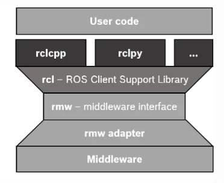
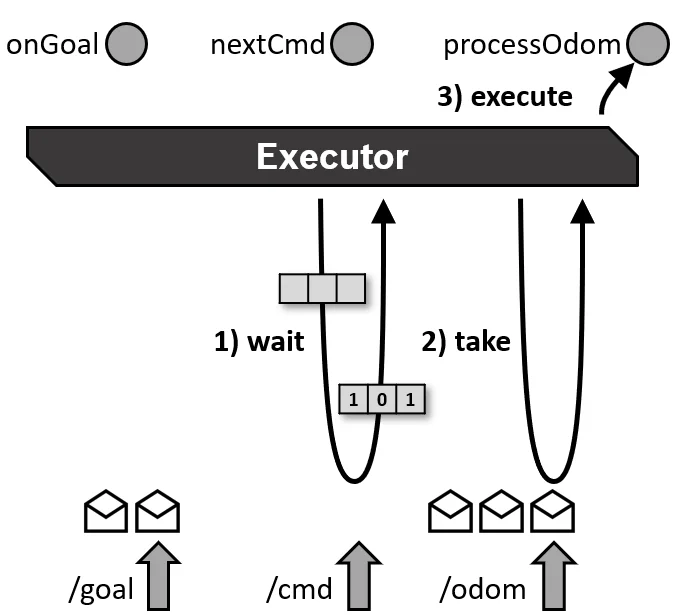
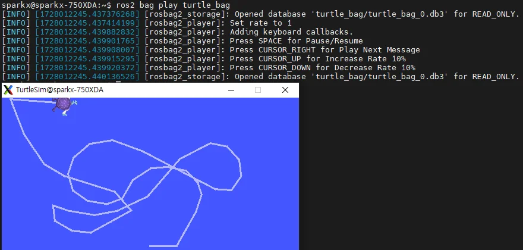
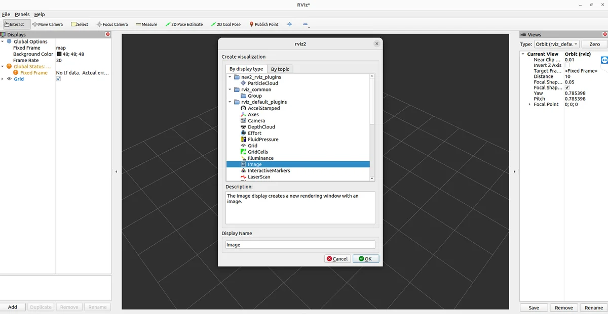
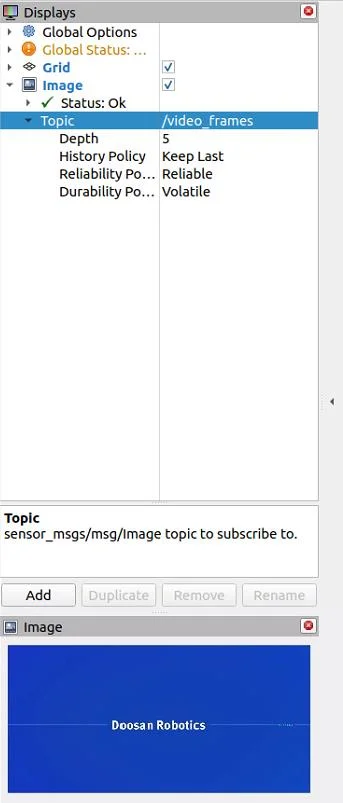

ROS2 입문 9차시 - ROS2 복습 (3)¶
ROS2 복습_3¶
Hang-man - 실습
Hang-man 구조도¶
Letter publisher User input Word service Action client Action server topic publish progress game_progress request
Hang-man - 실습
코드구조¶
- 전체 코드의 구조는 다음과 같음
- 일부 파일은 지금부터 생성 예정
hangman_interfaces¶
- hangman_interfaces/msg/Progress.msg
- current_state : 현재 상태ex) p y _ _ o n
- attempts_left : 목숨(남은 시도 횟수)
- game_over : 목숨이 다 소진되었는지
- won : 게임에서 이겼는지(목숨 소진 이전에 정답을 맞추었는지)
Hang-man - 실습
hangman_interfaces¶
- hangman_interfaces/srv/CheckLetter.srv
- updated_word_state: 현재 상태ex) p y _ _ o n
- is_correct : 현재user input으로 들어온 글자가 선택된 단어 내에 존재하는지에 대한 bool 타입 자료형
- message : 맞았으면“Correct”를 띄우고 틀리면“WRONG”을띄움
Hang-man - 실습
hangman_interfaces¶
- hangman_interfaces/action/GameProgress.action
- game_over : 목숨이 다 소진되었는지
- won : 게임에서 이겼는지(목숨 소진 이전에 정답을 맞추었는지)
Hang-man - 실습
hangman_game¶
- hangman_game/hangman_game/letter _publisher.py의 전체 코드
Hang-man - 실습
hangman_game¶
- hangman_game/hangman_game/word _service.py의 전체 코드
Hang-man - 실습
hangman_game¶
- hangman_game/hangman_game/word _service.py의 전체 코드
Hang-man - 실습
hangman_game¶
- hangman_game/hangman_game/word _service.py의 전체 코드
Hang-man - 실습
hangman_game¶
- hangman_game/hangman_game/user_ input.py 전체 코드
Hang-man - 실습
hangman_game¶
- hangman_game/hangman_game/ progress_action_client.py 전체 코드 Hang-man - 실습
hangman_game¶
- hangman_game/hangman_game/ progress_action_client.py 전체 코드 Hang-man - 실습
hangman_game¶
- hangman_game/hangman_game/ progress_action_server.py 전체 코드 Hang-man - 실습
hangman_game¶
- hangman_game/hangman_game/ progress_action_server.py 전체 코드
Hang-man - 실습
hangman_game¶
- hangman_game/hangman_game/ progress_action_server.py 전체 코드
Hang-man - 실습
hangman_game¶
- hangman_game/setup.py
- entry_points를 다음과 같이 변경
Hang-man - 실습
hangman_game¶
- hangman_interfaces/CMakeLists.txt
Hang-man - 실습
hangman_game¶
- hangman_interfaces/package.xml
Executor
ROS2 계층구조¶
상호 작용을 추상화
-
rmw adapter : RMW와 미들 웨어를 연결하는 중간 계층 역할. 이를 통해ROS2는특정DDS 구현 체에 종속되지 않고, 다양한 미들 웨어를 지원할 수 있는 유연성을 가짐
-
Middleware : 실제 메시지 전달과QoS 설정을 처리하는 계층
- 미들웨어: 분산 네트워크에서 애플리케이션 또는 구성 요소 간에 하나 이상의 종류의 통신 또는 연결을 가능하게하는 소프트웨어. ROS2에서는 노드 간의 메시지 송수신 및 이벤트 처리를 담당

Executor Executor 동작 과정
동작과정¶
정에서 미들 웨어에 저장된 메시지가 클라이언트로 전달됨
- execute : 메시지 처리를 위한 콜백 함수(onGoal, nextCmd, processOdom) 실행

Executor Executor의종류
SingleThreadedExecutor : 단일스레드에서콜백을실행¶
- 하나의 스레드만 사용하여 이벤트를 처리하므로, 콜백이 완료될 때까지 다른 작업을 처리할 수 없음
- 주로 처리 속도가 중요한 것이 아니거나, 콜백이 충돌하지 않도록하기 위해 단일 스레드 환경에서 사용
StaticSingleThreadedExecutor : 단일스레드에서정적으로콜백을실행¶
- 정적 단일스레 드 실행자는 구독, 타이머, 서비스 서버, 액션 서버 등의 노드 구조를 스캔하는 런 타임 비용을 최적화
- 노드가 추가될 때 콜백 스캔을 한 번만 수행되며, 다른 두Executer는 이러한 변화를 정기적으로 스캔
- 정적 단일스레 드 실행자는 초기화 중에 모든 구독, 타이머 등을 생성하는 노드와 함께 사용해야함

Executor Multi Thread Executor
MultiThreadedExecutor : 여러스레드에서콜백을병렬로실행¶
- 여러 스레드가 동시에 실행되기 때문에 복잡한 작업이나 멀티태스킹 환경에서 유리
- 그러나 다중 스레드 간의 자원 경쟁이나 동기화 문제가 발생할 수 있으므로, 적절한 동기화 처리(locking) 필요
Executor Executor 기본 동작
Executor 동작순서¶
처리하고, MultiThreadedExecutor는 병렬로 처리
Executor
Executor 사용예¶
- SingleThreadedExecutor를 사용하는 간단한 퍼블리셔 노 드
- 이벤트는1초마다 발생하여 메시지를 퍼블리싱
Executor
Executor 와spin 차이점¶
Executor spin() 역할 콜백 관리 및 실행 이벤트루프 실행 설명 노드에 포함된 콜백(토픽, 서비스, 타이머 등)을 관리하고, 이벤트가 발생하면 적절한 콜백을 실행하는 역할 수행 SingleThreadedExecutor와MultiThreadedExecutor 같은 다양한 종류가 있으며, 콜백을 실행하는 방식에 따라 동작 방식이 달라짐 Executor가이벤트를 처리하는 루프를 실행 spin()이 호출되면 노 드는 콜백이 발생하기를 기다리며, 이벤트가 감지될 때 콜백을 실행 Executor가동작할 수 있는 환경을 유지하는 루프이며, 명시적으로 종료하거나 프로그램이 종료될 때까지 계속 실행
Executor Executor 와spin 의관계
관계¶
- Executor는 콜백을 처리하는"관리자"이고, spin()은해당Executor가 콜백을 계속해서 처리하도록하는"루프"
- Executor는 콜백을 실행하는 규칙과 방식을 정의하고, spin()은 그 규칙에 따라Executor 가동작하도록해 주는 실행 메커니즘 SingleThreadedExecutor + spin(): 한 번에 하나의 콜백만 처리 MultiThreadedExecutor + spin(): 여러 콜백을 동시에 처리
멀티스레드와의연관성¶
- spin()을 사용하면Executor가 콜백을 처리하는 동안 계속해서 대기하지만, MultiThreadedExecutor를 사용하면 여러 콜백을 동시에 병렬로 처리할 수 있음
- 이때도spin()을 호출하여 이벤트루프가 유지되지만, 여러 스레드가 동시에 동작하면 서 여러 콜백을 병렬 처리 가능
ROS2 bag 이해 및 사용법 명령어
BAG 파일레코딩¶
- 다음 명령어는“topic_name”에서 수신되는 메시지를“my_bag.bag”라는 이름의BAG 파일에 레코딩함
BAG 파일재생¶
- 다음 명령어는“my_bag.bag”라는 이름의BAG 파일을 재생함
BAG 파일정보표시¶
- 다음 명령어는“my_bag.bag”라는 이름의BAG 파일의 정보를 표시함
BAG 파일 만들기
세번째터미널에서다음명령어를이용하여저장되어있는BAG 파일재생¶
- 간혹 인터럽트 등의 이유로turtle의 궤적이 기록 당시와 정확히 일치하지 않을 수 있음
- 이 문제를 방지하려면turtle의 움직임을 기록할 때, 각 명령이 완전히 완료된 후 다음 명령을 실행해야함 실습

BAG 파일 실습
BAG 파일에기록된2d 카메라정보불러오기¶
- 아래 제공된 링크에서rosbag2_video.tar.gz 파일을 다운로드 받은 후 압축 풀기 https://drive.google.com/drive/folders/1zjGVRD5YQkiM_yLwjGOGRF5cruz8-Wsn
- 다운로드된 압축 파일의 압축 풀기 실습
BAG 파일 실습
BAG 파일에기록된2d 카메라정보불러오기¶
- 압축 풀린bag 파일의 정보 확인
- Bag 파일 반복 재생 실습
BAG 파일 실습
BAG 파일에기록된2d 카메라정보불러오기¶
- 새로운 터미널에서rviz 실행 실습

BAG 파일 실습
BAG 파일에기록된2d 카메라정보불러오기¶
- Rviz에서add버튼을 누른 후Image 선택후OK 버튼 누르기 실습

BAG 파일 실습
BAG 파일에기록된2d 카메라정보불러오기¶
- 사이드 바에서 이미지의topic name을“＼video_frames” 로 바꾸기
- 하단의Image 창에 영상이 재생되는 것을 확인 영상 출처: https://www.youtube.com/watch?v=29iFysOZg3Q 실습

Visual Studio Code - extension¶
Jupyter를 이용한 프로그래밍 VSCode에서Jupyter 사용 - Extension의 주요 역할 및 기능 - 프로그래밍 언어 지원 추가: 추가 언어를 지원하거나 기존 언어의 기능을 확장 (예: Python, YAML등) - 생산성 향상 도구: 코딩, 탐색, 리팩토링, 반복 작업을 자동화해 생산성 향상 (예: XML Tools, Markdown All in One) - 특정 기술 또는 프레임워크 지원: 특정 프레임워크나 기술을 위한 추가 기능 제공 (예: ROS, URDF) - 자동화 및DevTools: 반복 작업을 자동화하거나 개발 환경을 확장(예: Colcon Tasks)
Visual Studio Code - extension¶
프로그래밍 응용 Service 와Action 에서의Client 차이 항목 Service Client Action Client 목적 요청-응답1회성 호출 장시간 작업의 관리 단계수 1단계(call_async) 3단계(send_goal_async → Go alHandle → get_result_async) 중간 상태 없음 진행 상태(feedback), 취소등 처리 가능 .result() 위치 call_async 후future에서 get_result_async 후future에 서 피드백 처리 불가 가능(feedback_callback) 쓰임새 빠른 계산 요청(예: IK) 장기 제어 작업(예: 궤적 추종)
Jupyter Notebooks¶
9차시_1_ROS2_API함수정리¶

ROS 2 Humble에서 자주 사용하는 Topic, Service, Action 관련 Python API 함수들을 정리한 노트.
개발할 때 빠르게 참고할 수 있도록 요약.
Topic 관련 함수¶
퍼블리셔(Publisher)¶
create_publisher(MsgType, topic_name, qos_profile): 퍼블리셔 생성publish(msg): 메시지 전송
서브스크라이버(Subscriber)¶
create_subscription(MsgType, topic_name, callback, qos_profile): 서브스크라이버 생성callback(msg): 수신 메시지 처리 함수
Service 관련 함수¶
클라이언트(Client)¶
self.cli = self.create_client(SrvType, "service_name")
# 서비스 요청 준비
req = SrvType.Request()
req.param = value
# 서버가 준비될 때까지 대기
while not self.cli.wait_for_service(timeout_sec=1.0):
self.get_logger().info("Waiting for service...")
# 요청 보내기
future = self.cli.call_async(req)
future.add_done_callback(response_callback)
create_client(SrvType, service_name): 서비스 클라이언트 생성SrvType.Request(): 요청 메시지 생성-
call_async(req): 비동기 요청 -
cli.call_async()는 ROS 2에서 서비스 클라이언트가 비동기적으로 서비스 요청을 보낼 때 사용하는 메서드입니다.
- cli.call_async(req)는 서비스 서버에 요청을 보내고, 결과를 기다리는 Future 객체를 반환합니다.
- 결과는 나중에 add_done_callback()이나 spin_until_future_complete()로 받습니다.
Service Request(서비스 요청)¶
서비스 클라이언트 + add_done_callback()
핵심 요약
항목 설명
call_async(req) 비동기 서비스 호출, Future 반환
반환값 Future 객체 (future.result()로 결과 얻음)
처리 방법 rclpy.spin_once() 루프 안에서 future.done() 체크
Service 서버(Server)¶
create_service(SrvType, service_name, callback): 서비스 서버 생성callback(request, response): 요청 처리 함수response.param = value→ 응답 내용 설정
| 역할 | 서버 | 클라이언트 |
|---|---|---|
| 생성 | create_service() |
create_client() |
| 요청 핸들링 | callback(request, response) |
req = Request(); call_async(req) |
| 응답 전송 | return response |
future.result()로 결과 받음 |
| 필드 설정 | response.param = value |
req.param = value |
Action 관련 함수¶
액션 클라이언트(Action Client)¶
self._action_client = ActionClient(self, ActionType, "action_name")
# 서버 대기
self._action_client.wait_for_server()
# goal 생성
goal_msg = ActionType.Goal()
goal_msg.param = value
# goal 전송
self._send_goal_future = self._action_client.send_goal_async(
goal_msg, feedback_callback=self.feedback_callback
)
# 결과 기다리기
self._send_goal_future.add_done_callback(self.goal_response_callback)
ActionClient(self, ActionType, action_name): 액션 클라이언트 생성send_goal_async(goal_msg, feedback_callback): 목표 전송goal_response_callback(future): 응답 처리feedback_callback(feedback_msg): 피드백 수신 처리get_result_async(): 결과 요청
액션 클라이언트 + send_goal_async()
goal_future = action_client.send_goal_async(goal_msg)
goal_future.add_done_callback(goal_response_callback)
add_done_callback(fn) Future가 완료될 때 호출할 함수를 등록
fn(future) 콜백 함수는 future 객체를 인자로 받음
쓰임새 비동기 서비스/액션 결과 처리
액션 클라이언트 실행 흐름
send_goal_async(goal_msg)
└──> feedback_callback() ← 피드백 받을 때마다 호출
└──> goal_response_callback(future)
└──> get_result_async()
└──> get_result_callback(future)
콜백 예시 전체 코드
def goal_response_callback(future):
goal_handle = future.result()
if not goal_handle.accepted:
print('❌ Goal was rejected')
return
print('✅ Goal accepted')
result_future = goal_handle.get_result_async()
result_future.add_done_callback(get_result_callback)
def get_result_callback(future):
result = future.result().result
print(f'🎉 Result: {result.sequence}')
goal_future = action_client.send_goal_async(goal_msg)
goal_future.add_done_callback(goal_response_callback)
액션 서버(Action Server)¶
self._action_server = ActionServer(
self,
ActionType,
'action_name',
self.execute_callback, # execute 단계에서 실행됨
goal_callback=self.on_goal, # goal 도착시 실행
)
ActionServer(self, ActionType, action_name, execute_callback): 액션 서버 생성execute_callback(goal_handle): goal 처리 함수- 내부에서
goal_handle.publish_feedback()으로 피드백 전송 goal_handle.succeed()또는goal_handle.abort()return result로 결과 전달
액션 서버 콜백
여기서도 결국 executor가:
-
goal이 오면 → wait
-
goal을 DDS에서 → take
-
self.on_goal(goal_request) 실행 → execute
이 줄은 ROS 2의 액션 서버를 구현할 때 필요한 핵심 클래스와 상수를 임 포트하는 구문
ActionServer 액션 서버를 생성하는 클래스. 노드 안에서 특정 액션 타입을 처리할 수 있게 만듦
GoalResponse goal을 수락할지, 거부할지를 나타내는 상수 (ACCEPT, REJECT)
CancelResponse 클라이언트가 요청한 goal 취소 요청에 대해 응답하는 상수 (ACCEPT, REJECT)
GoalResponse 상수
GoalResponse.ACCEPT
GoalResponse.REJECT
CancelResponse 상수
CancelResponse.ACCEPT
CancelResponse.REJECT
rclpy.spin(node)을 호출하면:
while rclpy.ok():
# 1. wait: DDS WaitSet으로부터 이벤트 기다림
# 2. take: 누가 publish한 메시지 등 도착함
# 3. execute: 등록된 콜백 함수 실행
참고용 예시 메시지 타입¶
- Topic:
std_msgs.msg.String,sensor_msgs.msg.Image - Service:
example_interfaces.srv.AddTwoInts - Action:
example_interfaces.action.Fibonacci
ROS 2에서의 goal_handle¶
goal_handle은 action 서버가 클라이언트로부터 받은 목표(goal)에 대해 추적 및 상태를 관리하기 위해 사용하는 객체입니다.
작동 흐름 요약
-
클라이언트가 send_goal_async(goal_msg)로 goal 전송
-
서버는 execute_callback(goal_handle) 호출
-
서버는 goal_handle.request를 통해 전달된 goal 내용을 읽음
동작 흐름
Client Server
│ │
├── send_goal_async() ──────▶│
│ │
│ Future (goal_handle) │
├◀───────────────────────────┤
│ │
├─ goal_handle.get_result_async() ──▶ (결과 기다림)
```
goal_handle에서 자주 쓰는 속성과 메서드
```bash
속성/메서드 설명
goal_handle.request 클라이언트가 보낸 goal 요청 내용
goal_handle.accepted 이 goal이 수락되었는지 여부
goal_handle.publish_feedback(feedback_msg) 클라이언트에 피드백 보내기
goal_handle.succeed() goal이 정상적으로 완료됨을 알림
goal_handle.abort() goal 수행 중 실패를 알림
goal_handle.canceled() 클라이언트가 goal을 취소했음을 알림
goal_handle.is_cancel_requested 클라이언트가 취소 요청을 했는지 확인
ActionServer 액션 서버 생성 클래스
goal_callback goal을 수락할지 거절할지 결정
cancel_callback 클라이언트가 goal을 취소하려고 할 때 처리
execute_callback 실제 작업 수행 / 피드백 보내고 결과 반환
예 제 흐름 (서버에서)
def goal_callback(self, goal_request):
self.get_logger().info(f"Goal received: {goal_request}")
return GoalResponse.ACCEPT
def cancel_callback(self, goal_handle):
self.get_logger().info("Cancel request received.")
return CancelResponse.ACCEPT
async def execute_callback(self, goal_handle):
9차시_2_주피터노트북_사용시_주의사항¶

주피터 노트북으로 ROS2 사용시 주의해야할 사항들 정리¶
rclpy 초기화/종료¶
ROS 2 Python 노드를 작성할 때
rclpy.init()
node = rclpy.create_node('my_node')
rclpy.spin(node)
node.destroy_node()
rclpy.shutdown()
Jupyter에서는 이렇게 나눠서 실행¶
class MyNode(Node):
def __init__(self):
super().__init__('my_node')
self.get_logger().info('Node initialized!')
node = MyNode()
콜백이 있다면 spin 필요¶
종료 시점에 수동으로¶
rclpy.spin()은 블로킹이기 때문에, Jupyter에서는 rclpy.spin_once()를 주기적으로 호출하는 방식이 더 적합할 수 있음 (아래 예시 참고)
그 다음 셀에서
Publisher/Subscriber 사용¶
퍼블리셔 예시
from std_msgs.msg import String
publisher = node.create_publisher(String, 'chatter', 10)
msg = String()
msg.data = 'Hello from Jupyter!'
publisher.publish(msg)
서브스크라이버 예시
def callback(msg):
print(f"Received: {msg.data}")
subscriber = node.create_subscription(String, 'chatter', callback, 10)
launch나 lifecycle 관련 노드 실행은 피하거나 별도로
Launch file 기반으로 실행되는 복잡한 노드는 Jupyter에서 직접 실행하기 어렵기 때문에,
ROS Launch로 띄우고 Jupyter에서 통신만 하는 식이 더 적합
요약: Jupyter에서 ROS 2 노드 실행 체크리스트¶
- ROS 환경 활성화 setup.bash source 후 jupyter lab 실행
- rclpy.init()/shutdown() 수동 관리 셀 분리해서 실행
- rclpy.spin() 대신 spin_once() + loop 인터랙티브 실행 가능
- 블로킹 함수 주의 spin()은 막히기 때문에 반복 문으로 대체
- 타이머/퍼블리셔/서브스크라이버는 가능 대부분 잘 작동
- launch 파일은 별도로 실행 Jupyter에서는 통신 위주로 활용
9차시_3_cam_실행¶

ROS 2 Humble - 카메라 이미지 퍼블리셔 & 서브스크라이버
사용 메시지 타입: sensor_msgs/msg/Image
이미지 처리 라이브러리: cv_bridge, OpenCV
카메라 데이터: 직접 캡처(OpenCV) 또는 실제 카메라 노드 사용 가능
ros2 pkg create --build-type ament_python my_cam_pubsub --dependencies rclpy sensor_msgs cv_bridge
-
퍼블리셔 노드 (카메라 데이터 publish)
-
서브스크라이버 노드 (카메라 데이터 수신)
설치 필요 패키지
setup.py 수정
console_script 에 아래 내용 추가
colcon build 실행¶
실행 명령어(터미널 3개 열고실행)¶
ros2 run my_cam_pubsub cam_pub
다른 Terminal 에서
ros2 run my_cam_subsub cam_sub
rqt 에서 Image 출력력
rviz 에서 Image 출력
테스트 순서¶
- 퍼블리셔 노드 실행 (카메라 영상 송출)
- 서브스크라이버 노드 실행 (영상 수신 및 출력)
- rqt 실행
- image view 시청
9차시_4_hangman_api_list¶

hangman_game/letter_publisher.py¶
self.publisher_ = self.create_publisher(String, 'letter_topic', 10)
self.timer = self.create_timer(1.0, self.publish_letter)
letter_topic이라는 이름의 토픽을 만들고, std_msgs/msg/String 타입의 데이터를 퍼블리시 할 퍼블리셔 객체 생성
10: 큐 사이즈 (토픽 메시지 버퍼 용량)
1초마다 self.publish_letter()를 실행하는 타이머 생성
현재 알파벳 문자를 메시지에 담아 letter_topic으로 퍼블리시
hangman_game/word_service.py¶
self.service = self.create_service(CheckLetter, "check_letter", self.check_letter_callback)
self.subscription = self.create_subscription(String, "letter_topic", self.letter_callback, 10)
self.progress_publisher = self.create_publisher(Progress, "progress", 10)
check_letter라는 이름으로 서비스 서버 생성 (요청 받으면 check_letter_callback 실행)
서비스 타입: CheckLetter.srv (예: 문자 체크)
letter_topic을 구독하고, 새로운 메시지가 올 때 letter_callback을 호출함
progress라는 토픽에 퍼블리시할 퍼블리셔 생성 (Progress.msg 타입 사용)
초기 Progress 메시지를 퍼블리시 (ex: 게임 시작 상태)
# Publish progress
progress_msg = Progress()
progress_msg.current_state = response.updated_word_state
progress_msg.attempts_left = self.attempts_left
self.progress_publisher.publish(progress_msg)
서비스 처리 결과(updated_word_state, 남은 시도 수)를 포함해 progress 토픽으로 게임 진행 상황 퍼블리시
hangman_game/user_input.py¶
self.cli = self.create_client(CheckLetter, "check_letter")
while not self.cli.wait_for_service(timeout_sec=1.0):
self.get_logger().info("Service not available, waiting...")
self.req = CheckLetter.Request()
check_letter 서비스를 호출할 수 있는 클라이언트 생성
서비스 서버가 뜰 때까지 대기 (1초마다 확인)
CheckLetter 서비스의 요청 메시지 인스턴스를 생성
비동기 방식으로 서비스 요청을 보내고 결과를 기다리는 Future 객체 반환 서비스 호출이 완료되면 결과 처리를 위한 콜백 등록
Future에서 실제 응답 데이터 추출 (보통 콜백 함수 내에서 사용)
hangman_game/progress_action_server.py¶
game_progress라는 이름의 액션 서버 생성
액션 타입: GameProgress.action
콜백: 목표 수신 시 execute_callback() 실행
progress 토픽을 구독해 게임 진행 상황을 모니터링
Action Server 의 주요 정의부(execute_callback함수)¶
액션 서버에서 클라이언트로부터 goal을 받았을 때 호출되는 함수
피드백 메시지를 액션 클라이언트에 전송
액션 목표가 성공적으로 완료되었음을 알림
hangman_game/progress_action_client.py¶
game_progress 액션 서버에 연결할 액션 클라이언트 생성
goal을 서버로 보낼 함수 호출
액션 목표를 담을 메시지 인스턴스 생성
self._send_goal_future = self._action_client.send_goal_async(goal_msg,feedback_callback=self.feedback_callback)
self._send_goal_future.add_done_callback(self.goal_response_callback)
비동기 방식으로 goal 전송, 피드백 수신용 콜백 설정
goal 전송 결과(수락 여부) 처리를 위한 콜백 등록
goal 전송 결과에서 goal handle 추출
self._get_result_future = goal_handle.get_result_async()
self._get_result_future.add_done_callback(self.get_result_callback)
목표 결과를 비동기로 요청
목표 처리 결과 수신 시 실행할 콜백 등록
액션 처리 결과 추출
Code Examples¶
hangman_game/¶
hangman_game/hangman_game/__init__.py¶
hangman_game/hangman_game/letter_publisher.py¶
# hangman_game/letter_publisher.py
import rclpy
from rclpy.node import Node
from std_msgs.msg import String
class LetterPublisher(Node):
def __init__(self):
super().__init__('letter_publisher')
self.publisher_ = self.create_publisher(String, 'letter_topic', 10)
self.timer = self.create_timer(1.0, self.publish_letter)
self.current_letter = ord('a')
def publish_letter(self):
msg = String()
msg.data = chr(self.current_letter)
self.publisher_.publish(msg)
self.get_logger().info(f'Publishing: {msg.data}')
self.current_letter += 1
if self.current_letter > ord('z'):
self.current_letter = ord('a')
def main(args=None):
rclpy.init(args=args)
letter_publisher = LetterPublisher()
rclpy.spin(letter_publisher)
letter_publisher.destroy_node()
rclpy.shutdown()
if __name__ == '__main__':
main()
hangman_game/hangman_game/progress_action_client.py¶
# hangman_game/progress_action_client.py
import rclpy
from rclpy.node import Node
from hangman_interfaces.action import GameProgress
from rclpy.action import ActionClient
class ProgressActionClient(Node):
def __init__(self):
super().__init__("progress_action_client")
self._action_client = ActionClient(self, GameProgress, "game_progress")
self.result_received = False
self.send_goal()
def send_goal(self):
self.get_logger().info("Action Client: Waiting for action server...")
self._action_client.wait_for_server()
goal_msg = GameProgress.Goal()
self.get_logger().info("Action Client: Sending goal request...")
self._send_goal_future = self._action_client.send_goal_async(
goal_msg, feedback_callback=self.feedback_callback
)
self._send_goal_future.add_done_callback(self.goal_response_callback)
def feedback_callback(self, feedback_msg):
feedback = feedback_msg.feedback
if feedback.game_over:
self.get_logger().info("Action Client: Game over detected in feedback")
def goal_response_callback(self, future):
goal_handle = future.result()
if not goal_handle.accepted:
self.get_logger().info("Action Client: Goal rejected")
self.result_received = True
return
self.get_logger().info("Action Client: Goal accepted")
self._get_result_future = goal_handle.get_result_async()
self._get_result_future.add_done_callback(self.get_result_callback)
def get_result_callback(self, future):
result = future.result().result
if result.won:
self.get_logger().info("Action Client: Congratulations! You won!")
else:
self.get_logger().info("Action Client: Game Over. You lost.")
self.result_received = True
# ... (15 more lines)
hangman_interfaces/¶
hangman_interfaces/srv/CheckLetter.srv¶
hangman_interfaces/action/GameProgress.action¶
# Goal
# Empty since the client doesn't need to send any data
---
# Result
bool game_over
bool won
---
# Feedback
bool game_over
hangman_interfaces/msg/Progress.msg¶
my_cam_pubsub/¶
my_cam_pubsub/my_cam_pubsub/__init__.py¶
my_cam_pubsub/my_cam_pubsub/cam_pub.py¶
import rclpy
from rclpy.node import Node
from sensor_msgs.msg import Image
from cv_bridge import CvBridge
import cv2
class CameraPublisher(Node):
def __init__(self):
super().__init__("camera_publisher")
self.publisher = self.create_publisher(Image, "camera/image_raw", 10)
self.timer = self.create_timer(0.1, self.timer_callback) # 10Hz
self.cap = cv2.VideoCapture(0)
self.bridge = CvBridge()
def timer_callback(self):
ret, frame = self.cap.read()
if not ret:
self.get_logger().error("Failed to read from camera")
return
msg = self.bridge.cv2_to_imgmsg(frame, encoding="bgr8")
self.publisher.publish(msg)
self.get_logger().info("Published image")
def main():
rclpy.init()
node = CameraPublisher()
rclpy.spin(node)
node.cap.release()
node.destroy_node()
rclpy.shutdown()
if __name__ == "__main__":
main()
my_cam_pubsub/my_cam_pubsub/cam_sub.py¶
import rclpy
from rclpy.node import Node
from sensor_msgs.msg import Image
from cv_bridge import CvBridge
import cv2
class CameraSubscriber(Node):
def __init__(self):
super().__init__("camera_subscriber")
self.subscription = self.create_subscription(
Image, "camera/image_raw", self.listener_callback, 10
)
self.bridge = CvBridge()
def listener_callback(self, msg):
frame = self.bridge.imgmsg_to_cv2(msg, desired_encoding="bgr8")
# cv2.imshow("Camera Feed", frame)
cv2.waitKey(1)
def main():
rclpy.init()
node = CameraSubscriber()
rclpy.spin(node)
node.destroy_node()
rclpy.shutdown()
# cv2.destroyAllWindows()
if __name__ == "__main__":
main()